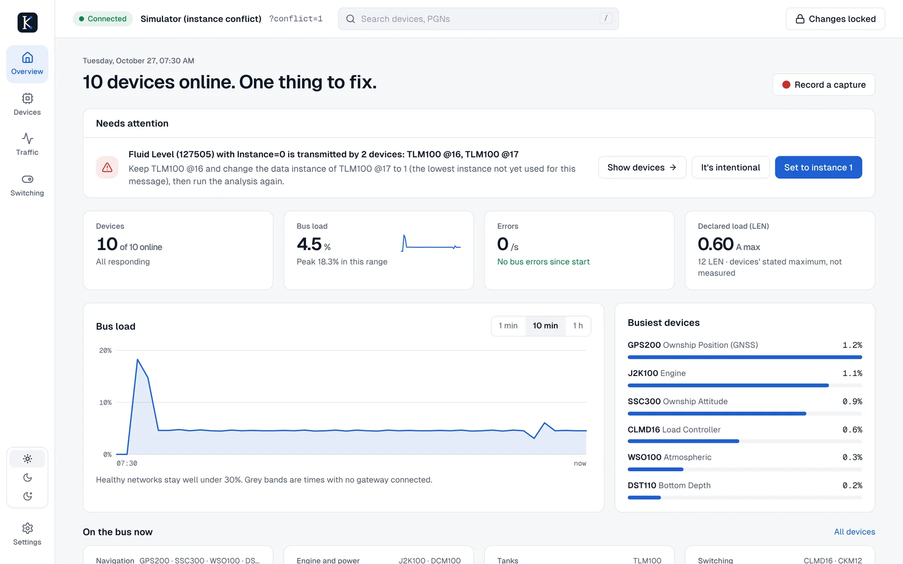

See what’s wrong on a boat’s network, fix it safely, and know the fix took.
Keelwire is a free, open-source network analyzer for marine technicians and owners. It reads every message on a boat’s NMEA 2000® backbone, tells you in plain language what needs attention, suggests the fix, and checks that the device accepted it. One small program, no runtime to install, and it works with the gateways you already carry.

One program, nothing else
About 10 MB with the interface and message database built in. Desktop app, or headless on a Raspberry Pi serving any phone aboard.
Your gateway
Maretron IPG100, Actisense NGT-1 and ASCII gateways, Yacht Devices, SocketCAN on a Pi, a Signal K tap, or a capture file.
Plain-language diagnosis
Instance conflicts, silent devices, bus load and declared power, worked out continuously and explained with a suggested fix.
Changes you can trust
Locked until you unlock them, staged beside current values, sent as standard commands and read back from the device.
A map of the backbone that never guesses
NMEA 2000 doesn’t tell anyone where a device sits on the cable, so Keelwire doesn’t pretend to know. Until a technician arranges it, devices are grouped by type and the map says so. Drag them into place once, mark the terminators and the power tee, and every later visit opens with the real layout.
Who is talking, how much, and what they’re saying
Two tables over the same live counters: one row per device, or one row per message type. Choose your columns, filter, search by name, @address, serial or PGN, and export to CSV.
Five screens, one job each
Overview tells you what needs fixing. Devices shows what’s on the network. Traffic shows every message on the wire. Switching controls circuits. Settings connects to your gateway. The screenshots come from Keelwire’s built-in simulated boat, which has a fuel-tank conflict to fix.
Nothing reaches the bus by accident
Configuring a boat’s network can switch off a pump or confuse a chartplotter. Keelwire treats every change as something to check, not something to fire and forget.
Locked by default
Changes and switching stay locked until you press Changes locked. They lock again after 15 minutes without a change. The headless server only allows them when started with --allow-tx.
Staged beside the old value
Edits to instances, descriptions and offsets sit next to what the device has now, so you see exactly what will change before anything is sent.
Standard commands
Settings go out as NMEA 2000 Group Function commands (PGN 126208), the standard way to configure devices. Maretron-specific settings use the community-documented Maretron commands.
Read back to confirm
Keelwire asks the device for the value again and only reports success when it matches.
The Keelwire technician pack
Commercial gateways pass traffic but say nothing about the health of the cable itself. Two small ESP32 units will fill that gap. Today the app shows “Not measured” wherever a gateway can’t measure; with the pack, those tiles become real readings.
Keelwire Gateway
An always-on logger and Wi-Fi bridge.
- Streams every frame to the app
- CAN error counts by type
- Approximate supply voltage, temperature, Wi-Fi signal
- Coordinates a Power Tee
Keelwire Tech Gateway
The technician’s version: a panel Micro-C plug and an isolated USB port.
- Termination measured live: both, one missing, one extra
- Precise voltage at any drop
- Cable resistance and distance to the power tee
- Predicted voltage at full declared load
Keelwire Power Tee
Replaces the boat’s power-insertion tee. Its power path is passive, so the network keeps power even if its electronics fail.
- Real bus current, and how it splits each way
- Supply voltage at the feed
- A terminator switched from the app, with the technician’s confirmation
Built for the person in the bilge
Vendor tools are good at their own products. Keelwire is meant for a mixed boat, on whatever computer is to hand.
| What you need | Keelwire | Typical single-vendor tool |
|---|---|---|
| Runs on | Mac, Windows, Linux, Raspberry Pi, and any phone or tablet aboard through the Pi | Often Windows only |
| Gateways | Several makers’ gateways, SocketCAN, Signal K and capture files | Usually the vendor’s own |
| Finding problems | Continuous analysis that names the problem and offers the fix | Usually you read the device list yourself |
| Seeing the network | Backbone map arranged once by the technician, saved, with traffic on each drop | Varies |
| Traffic | Per-device and per-PGN tables, live message view, Wireshark capture | Varies |
| Making changes | Locked by default, staged, standard commands, read back | Varies |
| Cost and licence | Free, Apache 2.0, source on GitHub | Commercial |
Download, open, connect
Every download contains everything Keelwire needs. Pick yours from the Releases page.
Mac
Open the .dmg and drag Keelwire to Applications. Apple Silicon and Intel, macOS 11 or later.
Windows
Run the setup .exe. No administrator rights needed. An .msi is there for IT-managed installs.
Linux and Raspberry Pi
AppImage, .deb or .rpm. On a Pi with a CAN HAT, run it headless and open it from your phone.
# Raspberry Pi aboard, serving the interface on the boat's Wi-Fi
./keelwire --headless --interface socketcan:can0 --port 8080
# No boat handy? Try the simulated one
./keelwire --interface "sim:?conflict=1"Full instructions: INSTALL.md. Building from source: README.